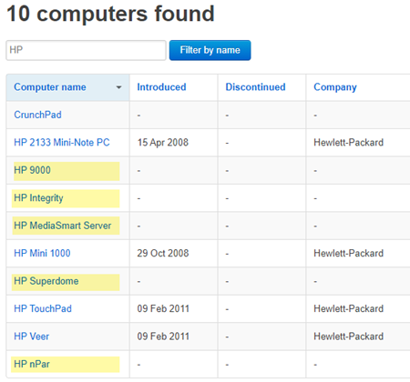
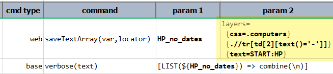
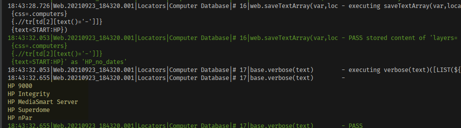

| Syntax/Example | Pros | Cons |
|---|---|---|
|
id=id-of-target-element
id=username
id=section1 |
|
|
|
This strategy instructs Nexial (webdriver behind the scene) to look for an element in the
current page
with an Typically the ID of a web element is assigned by the web developer. At the discretion of the developer, not every element might be assigned an ID, much less meaningful ones. Hence the success of using this approach is largely dependent on the developer, and to some extent the collaboration between engineers. Another issue is that, while ID should be unique on the same web page, many browsers allow violation of this rule such that an ID-based locator might match more than 1 element. Such anomaly occurs more frequently with generated ID stemmed from JavaScript front-end framework, the likes of React, Angular, Dojo, etc. In terms of performance, this approach is generally recognized as one of the faster ones. |
||
| Syntax/Example | Pros | Cons |
|---|---|---|
|
name=name-of-target-element
name=Password
name=SubmitOrder |
|
|
|
This strategy is similar to that of ID (above), with the exception that the target attribute
is
<form id="login_form" method="post" action="...">
Enter username: <input type="text" name="username"/><br/>
Enter password: <input type="password" name="password"/>
<input type="submit" name="submit" value="Log In"/>
</form>
To access the textbox for username, one could use a locator as name=username.
To reference the "Log In" button, one could specify name=submit.
Due to how such attribute is used, this strategy is best suited to referencing form elements. Some forms are generated dynamically or programmed to behave differently based on user interaction. Such might be difficult for the name-based strategy.
By specification, the |
||
| Syntax/Example | Pros | Cons |
|---|---|---|
|
link=link-text or linkText=link-text
link=Click here
link=Sale of the Week linkText=Login |
|
|
|
This strategy is intended to select hyperlink element(s) (denoted via the <A> tag) which has exactly
the specified text. It's straightforward and relatively fast. It is most suitable for navigation testing
or "dead link" checks. For example, consider this website with its navigation links:
One would notice that the locators above are not listed in the order as shown on the web page. Since the
criteria herein is strictly based on (a) hyperlink element, (b) the text of such hyperlink, the order,
the location or hierarchy of these elements are important. This makes for an efficient navigation test.
Not all web applications use the <A> tag to represent its navigation (this is the recommended approach by all major search and SEO engines to improve search hits). If a web application opted to use another tag, such as <DIV> tag, then this locator strategy would not work. Lastly, some browsers treat line breaks in link text differently. Notably, older versions of IE would add extra spaces where the link breaks are found. The link-based locator assumes EXACT match on the link text. |
||

| Syntax/Example | Pros | Cons |
|---|---|---|
|
partialLinkText=partial-link-text or
partial=partial-link-text
partialLinkText=Forgot My
partial=Click here to |
|
|
|
This strategy is intended to select hyperlink element(s) (denoted via the <A> tag) that contains
the specified text. This strategy is similar to that of Link Text, except that only partial match on the
link text is required. As a convenience, Nexial supports both the use of This strategy has potentially some advantages and some disadvantages. On one hand, partial match would remove the need for exact match thus simplify the automation work a bit. However, partial match could result in erroneous automation. Partial match could result in multiple matches and an unintended link could be invoked as a result. As with most web commands, when there are multiple matches to the specified partial text match, only the first matched element is considered. Not all web applications use the <A> tag to represent its navigation (inasmuch as this is the recommended approach by all major search and SEO engines to improve search hits). If a web application opted to use another tag, such as <DIV> tag, then this locator strategy would not work. |
||
| Syntax/Example | Pros | Cons |
|---|---|---|
|
tag=tag-name-of-element
tag=select
tag=table |
|
|
|
This is another simple way to located element(s) on a web page. The idea is to filter to element(s) of the same "tag" so that interactions can be made to all the elements of the same tag. There is no hierarchy support so only 1 tag can be referenced at one time. This is designed for simplistic use cases where tags are not used by overlapping purposes. |
||
| Syntax/Example | Pros | Cons |
|---|---|---|
|
class=css_class_name
class=nav-item
class=required_input |
|
|
|
This type of locator matches elements with an attribute named as This type of locator focused on the style class(es) set to web element. While only 1 style class can be specified in the locator, it is capable of matching web element that contains multiple style classes (including the target class). For example, suppose the following HTML snippet: <li name="item1" class="style1">Item 1</li> <li name="item2" class="style1 style2">Item 2</li> <li name="item3" class="style1 style3">Item 3</li> <li name="item4" class="style1 style2">Item 4</li> <li name="item5" class="style1 style2 style3">Item 5</li>In this case,
This type of locator is simple, highly readable and easy to maintain. However, it only deals with one style class at a time and does not consider other HTML attributes. |
||
| Syntax/Example | Pros | Cons |
|---|---|---|
|
css=css-selector
css=form#login > input.username
css=input[name='login'][type='submit'] css=#records li:nth-of-type(4) css=a[id^='id_prefix_'] |
|
|
|
Unlike the ID locator, name locator, link text locator and style class locator, which are designed for more specific cases, the CSS locator is designed for general-purpose use. Using the appropriate CSS selector, one can pinpoint to the element or elements with precision. A CSS Selector is a combination of an element selector and a value which identifies the web element within a web page. They represent HTML tags, attributes, ID and Classes as patterns that match against elements in their respective hierarchical structure tree. The W3C CSS-Selector provides a wide range of capabilities to reference web elements, of which most are implemented in Selenium 3.x. In general, the CSS selectors can be divided into the following categories:
|
||
| Syntax/Example | Pros | Cons |
|---|---|---|
|
xpath=xpath-to-target
xpath=//div[@id='d1']//a[text()='Best Price']
xpath=//footer //span[contains(text(),'Complete'] |
|
|
|
XPATH is a W3C standard to reference nodes and fragments of an XML/xHTML document. It has
sufficiently descriptive syntax for precise element referencing while not bound to the
underlying DOM structure. It is commonly known as an effective alternative where
However, with great power comes great responsibility.
XPath based locator can be easily misused where the locators can become difficult to read and maintain.
Deciphering and maintaining XPaths like
There are lots of tutorial and learning material on the Internet regarding XPath. Here are some that might be helpful:
|
||
| Syntax/Example | Pros | Cons | ||||||||||||||
|---|---|---|---|---|---|---|---|---|---|---|---|---|---|---|---|---|
|
text=element-text
text=Welcome
text=CONTAIN:order complete text=START_ANY_CASE:This request is submitted |
|
|
||||||||||||||
|
The "text" locator is uniquely crafted within Nexial to provide an efficient and easy-to-maintain
strategy for text-centric components. Consider the following example with multiple labels
(highlighted) and how we can reference them via
While its convenience is undeniable, this locator strategy is not a cure-all. Here are some reasons why you might not want to rely on this locator strategy too much:
In terms of performance, this approach is around the same speed as that of the XPATH-based locators. |
||||||||||||||||
| Syntax/Example | Pros | Cons | ||||
|---|---|---|---|---|---|---|
|
layer={locator}{locator}{...}
layer={css=dialog.toast}{text=Transaction Complete}
layer={css=.error}{text=CONTAIN:Invalid} |
|
|
||||
|
This is another Nexial-only locator. In essence, this approach allows the mix-and-match of any locator per
"DOM layer" to reference the target element(s). One can think of a "DOM layer" as the parent-child concept
of a web page, where web element capable of containing one or more web (child) elements. At each hierarchy
(or layer), a web element can be constructed very differently than its parent or its children
elements. As such, there might not be an optimal locator to reference a specific element and its parent
elements. Suppose we want to reference the <nav class="navbar navbar-light bg-light"> <i class="fa fa-shopping-cart fa-lg m-2" aria-hidden="true"></i> <span class="badge badge-pill badge-info m-2" style="width: 50px;">1</span> <span>Items</span> </nav>XPATH would seem to be the obvious choice since it is the only locator that can reference element text. However, XPATH isn't ideal to reference CSS classes. With layer locator we can reference the
same web element. Consider the difference between these locators:
layer locator (right) reads
find a web element that contains a "navbar" CSS class, then under such element, find a child or descendent element that has text "Item".In this case, the end result is the same as that of the XPATH locator. However, the layer locator has this {...} syntax, which represents 1 layer, that allows us to use different locator at each layer.
We can select the best locator strategy - in terms of performance, maintainability, etc. - at every layer
to create a so-called compound locator. This can lead to productivity gain, performance gain, and improved
readability.
Consider a different example below,  Suppose the objective is to find all the computer names that
layer={css=.computers}{.//tr[td[2][text()='-']]}{text=START:HP}
Note that the second layer uses a relative XPATH (a dot in front) because we are filtering within the previous "layer" (the TABLE). The last layer will automatically be converted into a
relative locator by Nexial. The START: syntax is part of PolyMatcher. Check out the "Text"
locator tab for more details on this.Now we can put this layer locator to good use:  Using the web » saveTextArray(var,locator)
command we can capture the text of each referenced web element. Then using the
LIST expression, we can convert the captured list into a
newline-separated text, like this:
One critical thing to note is that the flexibility of the layer locator can easily lead to abuse. One
should still hold to all the good practices of writing effective locators. |
||||||